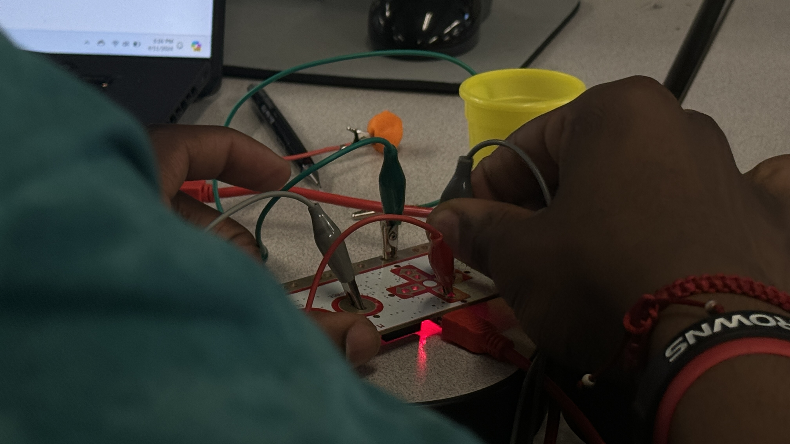
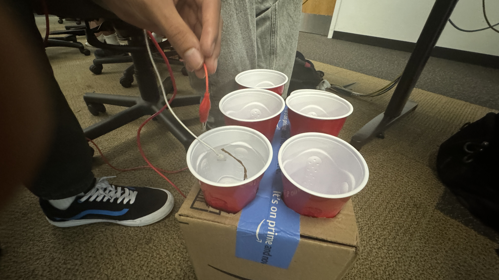
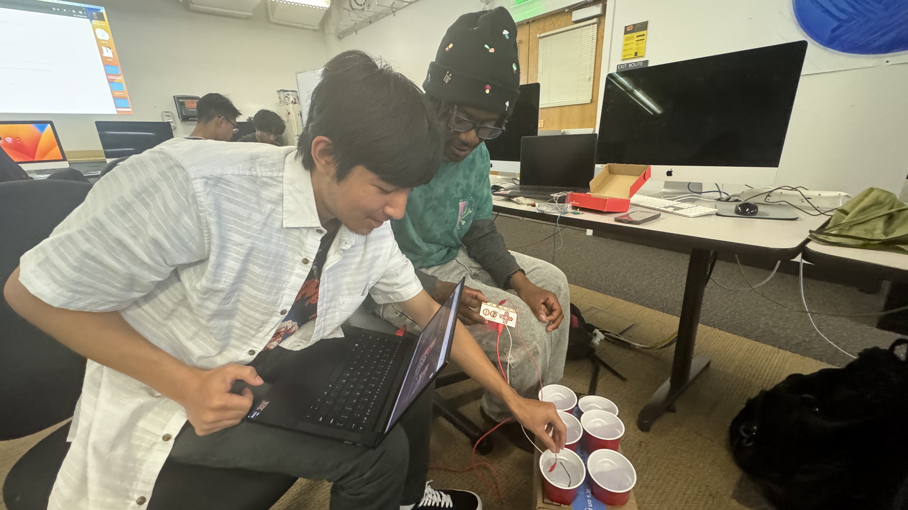

Our Internet Favorites
This is a board of our hand picked gifs from the bowels of the internet. Each cup of water displays a unique visual experience to the screen. Just dip the extension into a cup of water or the aluminum foil on the side of the box to display the awesomeness of that cup. Which is your favorite?
From the minds of Mark, Justin, and Chris.
Mark and Justin playing with the clay on Day 1
Close up of Mark testing the Makey Makey mechanics on Day 1
Justin and Mark testing out the Hydro-powered Makey Makeys
Justin and Mark playing with the water. Funnnn!
On our first day, we decided to design our Makey Makey to be functional with the power of water. Our design consists of a box with 6 circles cut out of one of the sides. This allows for the cups to be stable and able to get filled with water. We also used aluminum foil on the sides to act as buttons. To activate these "buttons", we grabbed a special stick from outside the Art Department and CAREFULLY wrapped the stick with magic aluminum foil. With this stick acting as the conductor, we activate our code everytime the conductor touches the water. Very neat!
Creating the device
Finished device
Testing
We took inpsiration from a Youtube video where a man used an Aloe Vera leaf wrapped in aluminum foil to activate the colored water cups. The link is here: Makey Makey Water Piano Inpsiration